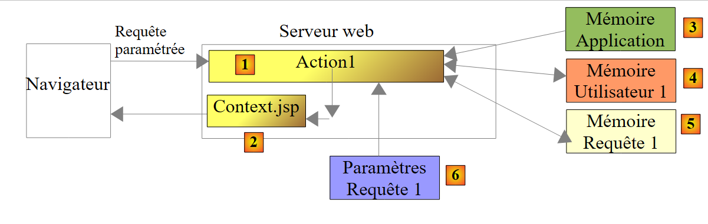

16. المثال 13 - سياق الإجراء
يهدف هذا التطبيق إلى توضيح أن الإجراء يمكنه الوصول إلى:
- إلى معلمات الاستعلام
- إلى سمات الطلب
- إلى سمات جلسة عمل المستخدم

16.1. مشروع NetBeans
 |
مشروع NetBeans هو كما يلي:
- في [1]، طريقة العرض [Context.jsp]
- في [2]، الإجراء [Action1.java] وملف تكوين Struts [example.xml]
16.2. Configuration
يتم تكوين المشروع في [example.xml]:
<?xml version="1.0" encoding="UTF-8" ?>
<!DOCTYPE struts PUBLIC
"-//Apache Software Foundation//DTD Struts Configuration 2.0//EN"
"http://struts.apache.org/dtds/struts-2.0.dtd">
<struts>
<package name="example" namespace="/example" extends="struts-default">
<action name="Action1" class="example.Action1">
<result name="success">/example/Context.jsp</result>
</action>
</package>
</struts>
- السطر 8: سيؤدي طلب عنوان URL [/example/Action1] إلى إنشاء مثيل للفئة [example.Action]. ونظرًا لعدم تحديد أي طريقة، فسيتم تنفيذ الطريقة execute.
- السطر 9: يُقبل مفتاح واحد فقط. يؤدي المفتاح success إلى عرض طريقة العرض [Context.jsp].
ستكون البنية المبسطة لمعالجة الطلب كما يلي:
 |
سيتم معالجة الطلب بواسطة عنصرين من عناصر تطبيق الويب: الإجراء [Action1] [1] والعرض [Context.jsp] [2]. يتمتع هذان العنصران بإمكانية الوصول إلى بيانات من أنواع مختلفة:
- بيانات النطاق Application [3]، c.a.d. وهي بيانات يمكن لجميع المستخدمين الوصول إليها من خلال جميع الطلبات. وتكون هذه البيانات في الغالب في وضع القراءة فقط. وغالبًا ما توجد في هذه البيانات التهيئة الأولية للتطبيق. وهنا، يتمتع كل من [Action1] و[Context.jsp] بإمكانية الوصول إلى هذه البيانات.
- بيانات النطاق Session و[4] وc.a.d. وهي بيانات متاحة لجميع الاستعلامات الصادرة عن المستخدم نفسه. وتكون هذه البيانات في وضع القراءة/الكتابة. هنا سيستخدم [Action1] الجلسة في وضع القراءة/الكتابة، بينما سيستخدمها [Context.jsp] في وضع القراءة.
- بيانات نطاق Requête و [5]، وهي متاحة لجميع العناصر التي تعالج الطلب. هنا، سيقوم [Action1] بتخزين بيانات في هذه الذاكرة، وسيقوم [Context.jsp] باستردادها. تسمح بيانات نطاق «الاستعلام» للعنصر N بنقل المعلومات إلى العنصر N+1.
- معلمات الطلب [6] المرسلة من العميل. يتم استخدامها للقراءة فقط من قبل العناصر التي تعالج الطلب.
16.3. الإجراء [Action1]
رمز فئة [Action1] هو كما يلي:
package example;
import com.opensymphony.xwork2.ActionSupport;
import java.util.Map;
import java.util.Set;
import org.apache.struts2.interceptor.ParameterAware;
import org.apache.struts2.interceptor.RequestAware;
import org.apache.struts2.interceptor.SessionAware;
public class Action1 extends ActionSupport implements SessionAware, RequestAware, ParameterAware {
// منشئ بدون معلمات
public Action1() {
}
// الجلسة، الطلب، المعلمات
Map<String, Object> session;
Map<String, Object> request;
Map<String, String[]> parameters;
@Override
public String execute() {
// قائمة المعلمات
System.out.println("Paramètres...");
Set<String> clés = parameters.keySet();
for (String clé : clés) {
for (String valeur : parameters.get(clé)) {
System.out.println(String.format("[%s,%s]", clé, valeur));
}
}
// الجلسة
System.out.println("Session...");
if (session.get("compteur") == null) {
session.put("compteur", new Integer(0));
}
Integer compteur = (Integer) session.get("compteur");
compteur = compteur + 1;
session.put("compteur", compteur);
System.out.println(String.format("compteur=%s", compteur));
// الطلب
request.put("info1", "information1");
// عرض الصفحة JSP
return SUCCESS;
}
// الجلسة
public void setSession(Map<String, Object> session) {
this.session = session;
}
// الطلب
public void setRequest(Map<String, Object> request) {
this.request = request;
}
// المعلمات
public void setParameters(Map<String, String[]> parameters) {
this.parameters = parameters;
}
}
- السطر 10: تنفذ الفئة الواجهات التالية
- SessionAware: للوصول إلى قاموس سمات الجلسة (السطر 16). تحتوي هذه الواجهة على طريقة واحدة فقط، وهي الموجودة في السطر 46.
- RequestAware: للوصول إلى قاموس سمات الاستعلام (السطر 17). تحتوي هذه الواجهة على طريقة واحدة فقط، وهي الموجودة في السطر 51.
- ParameterAware: للوصول إلى قاموس معلمات الاستعلام (السطر 18). يُلاحظ أن كل مفتاح (اسم المعلمة) يقابله مصفوفة من القيم. وهذا ضروري لمراعاة حقول الإدخال التي ترسل عدة قيم، مثل قائمة الاختيار المتعدد على سبيل المثال. لا تحتوي الواجهة ParameterAware إلا على طريقة واحدة، وهي الموجودة في السطر 56.
- السطر 21: الطريقة execute التي يتم تنفيذها عند طلب الإجراء [Action1]. وعند تنفيذها، تكون المعترضات قد أنجزت مهمتها:
- تم استدعاء الطريقة setParameters (السطر 56) ويحتوي قاموس المعلمات في السطر 18 على جميع معلمات الطلب.
- تم استدعاء الأسلوب setSession (السطر 46) ويحتوي القاموس session في السطر 16 على جميع سمات الجلسة.
- تم استدعاء الطريقة setRequest (السطر 51) ويحتوي قاموس request في السطر 17 على جميع سمات الطلب.
- الأسطر 31-38: يتم كتابة القيمة المرتبطة بالمفتاح compteur في الجلسة
- الأسطر 32-34: يتم البحث عن المفتاح compteur في الجلسة. إذا لم يتم العثور عليه، يتم إضافته إلى الجلسة مرتبطًا بالقيمة الصحيحة 0.
- الأسطر 35-37: يتم البحث عن المفتاح compteur في الجلسة، ويتم زيادة قيمته ثم إعادة إدراج المفتاح في الجلسة.
- السطر 38: يتم عرض القيمة المرتبطة بالمفتاح compteur. ونظرًا لأن الزيادة تتم عند كل استعلام على الإجراء [Action1]، فمن المفترض أن نرى قيمة العداد تزداد مع تتابع الاستعلامات.
- السطر 40: يتم إدراج سمة في قاموس سمات الطلب بمفتاح info1 وقيمة information1. تختلف سمات الطلب عن معلماته. يتم إرسال المعلمات من قبل عميل تطبيق الويب. أما سمات الطلب فهي التي تتيح التواصل بين العناصر المختلفة للتطبيق الويب التي تعالج الطلب. وهكذا، بعد تنفيذ [Action1]، سيتم عرض العرض [Context.jsp]. وسنرى أنه قادر على استرداد سمات الطلب.
- السطر 42: تُرجع الطريقة execute المفتاح succes.
16.4. ملف الرسائل
ملف [messages.properties] هو كما يلي:
Context.titre=Contexte de l''action
Context.message=Contexte de l''action
Context.parameters=Param\u00E8tres de l''action
Context.session=Elements de session
Context.request=Attributs de requ\u00EAte
16.5. طريقة العرض [Context.jsp]
تتمثل وظيفة طريقة العرض [Context.jsp] في عرض:
- بعض معلمات الاستعلام
- قيمة المفتاح compteur في الجلسة
- قيمة المفتاح info1 في الاستعلام
ورمزها هو كما يلي:
<%@ page contentType="text/html; charset=UTF-8" pageEncoding="UTF-8"%>
<%@ taglib prefix="s" uri="/struts-tags" %>
<html>
<head>
<title><s:text name="Context.titre"/></title>
<s:head/>
</head>
<body background="<s:url value="/ressources/standard.jpg"/>">
<h2><s:text name="Context.message"/></h2>
<h3><s:text name="Context.parameters"/></h3>
<s:iterator value="#parameters['nom']" var="nom">
nom : <s:property value="nom"/><br/>
</s:iterator>
<s:iterator value="#parameters['prenom']" var="prenom">
prenom : <s:property value="prenom"/><br/>
</s:iterator>
<s:iterator value="#parameters['age']" var="age">
âge : <s:property value="age"/><br/>
</s:iterator>
<h3><s:text name="Context.session"/></h3>
compteur : <s:property value="#session['compteur']"/>
<h3><s:text name="Context.request"/></h3>
info1 : <s:property value="#request['info1']"/>
</body>
</html>
- الأسطر 12-14: تعرض جميع القيم المرتبطة بالمعلمة nom
- الأسطر 15-17: تعرض جميع القيم المرتبطة بالمعلمة prenom
- الأسطر 18-20: تعرض جميع القيم المرتبطة بالمعلمة age
- السطر 22: يعرض القيمة المرتبطة بالمفتاح compteur في الجلسة
- السطر 24: يعرض القيمة المرتبطة بالمفتاح info1 في الاستعلام
16.6. الاختبارات
 |
- في [1]، يُطلب Action1 بدون معلمات
- في [2]، لم يعثر [Context.jsp] على أي معلمات
- في [3]، [Context.jsp] تم العثور على المفتاح compteur في الجلسة
- في [4]، عثر [Context.jsp] على المفتاح info1 في الاستعلام
لنقم باختبار آخر:
 |
- في [1]، يُطلب Action1 بمعلمات
- في [2]، يعرض [Context.jsp] هذه المعلمات
- في [3]، عثرت [Context.jsp] على المفتاح compteur في الجلسة. وقد تمت زيادة العداد بمقدار 1، مما يدل على أنه تم التخزين بالفعل بين الطلبين.
- في [4]، عثرت [Context.jsp] على المفتاح info1 في الطلب
نتذكر أن الطريقة [Action1.execute] كانت تكتب على وحدة التحكم الخاصة بخادم الويب. وإليك مثال على ذلك:
16.7. Conclusion
يجب تذكر النقاط التالية:
- لتخزين المعلومات التي يجب مشاركتها بين جميع الطلبات لجميع المستخدمين، سنستخدم ذاكرة التطبيق. سنعرض مثالاً على ذلك قريبًا.
- لتخزين المعلومات التي يجب مشاركتها بين جميع الطلبات الخاصة بنفس المستخدم، سنستخدم جلسة عمل هذا المستخدم.
- لتخزين المعلومات التي يجب مشاركتها بين جميع العناصر التي تعالج طلبًا ما، سنستخدم ذاكرة الطلب.